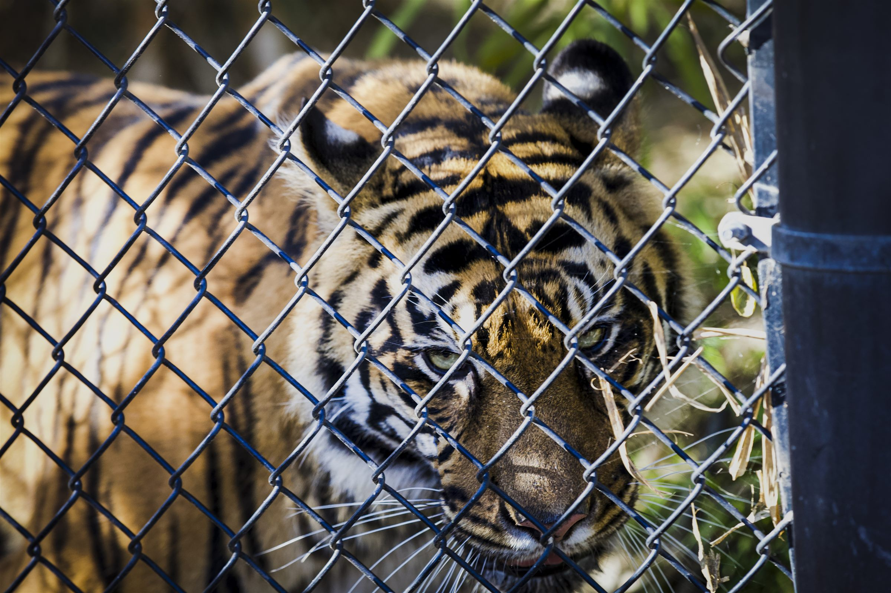
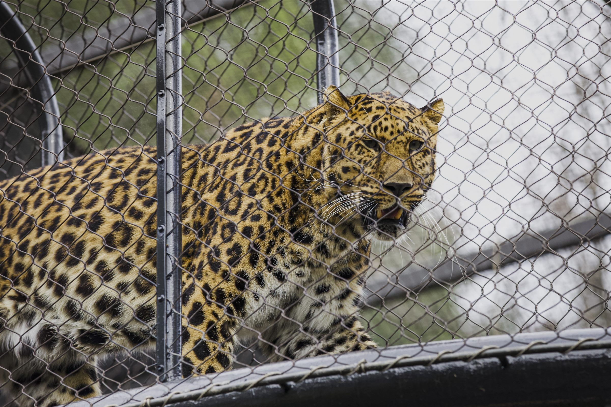

Travel Notes
Our First Road Trip
We went to San Diego and visited what many call the world’s best zoo—both the main San Diego Zoo and the Safari Park. We had an amazing time there, spending the day among animals, open landscapes, and the playful energy of the park.
We also drove along the coast, where sea lions rested lazily on the beach while the night breeze moved softly through the air. Most importantly, it was the first road trip with just me and Cici, and it gave us the confidence to dream about driving much farther in the future.
Selected Photos
Moments from San Diego

